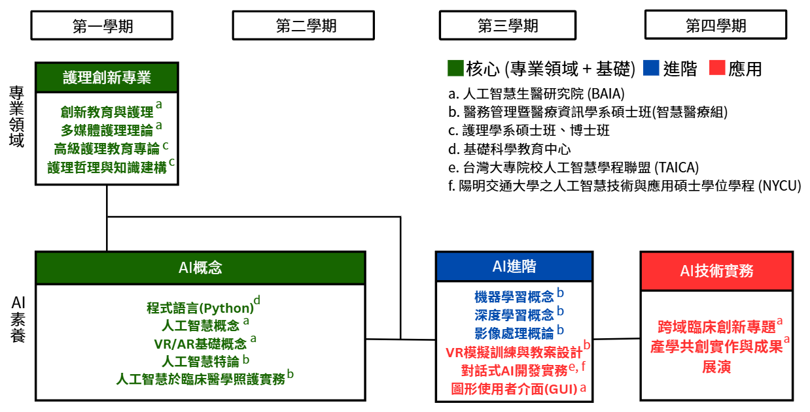

課程內容
Curriculum
課程地圖
Curriculum Map

本學程為兩年共四學期。
分為兩個主軸：「專業領域」和「AI素養」。
課程圍繞四個主題式課群，並從核心至進階，再到實作應用。
分為兩個主軸：「專業領域」和「AI素養」。
課程圍繞四個主題式課群，並從核心至進階，再到實作應用。
- 護理創新專業：聚焦在護理創新專業與 AI 理論發展，建立護理專業與科技連結的理論基礎。
- AI概念：了解AI概念和VR、AR的基礎，學習python程式語言。
- AI進階：應用機器學習模型解決實際問題，包含深度學習、影像處理；設計VR模擬訓練與教材，進行對話式AI開發。
- AI技術實務：與業界及臨床導師合作完成臨床需求導向的原型成果，舉辦成果展。
課程特色
Features
1. 聯合師資：
整合高醫人工智慧生醫研究院、護理學系、醫務管理暨醫療資訊學系、基礎科學教育中心， 同時與校外的陽明交通大學人工智慧技術與應用碩士學位學程、台灣大專院校人工智慧學程聯盟合作。
整合高醫人工智慧生醫研究院、護理學系、醫務管理暨醫療資訊學系、基礎科學教育中心， 同時與校外的陽明交通大學人工智慧技術與應用碩士學位學程、台灣大專院校人工智慧學程聯盟合作。
每學期召開「課群教師協調會議」，一同規劃課程進度、整合跨課程教學活動與學生輔導策略。
設立「跨域共授制度」，如機器學習課程由 AI 教師講授理論，護理教師搭配臨床應用導引。
2. 實作導向課程設計：
- 產學共創：問題導向專題將會與優必達、宏達國際電子，以及附院合作，利用所學到臨床照護情境中。
- 跨域合作：根據臨床實際應用情境，與資訊、設計、醫療產業專家合作，分組時採跨學系分組合作、師生共學模式。
- 成果展演：將有數個成果產出，如：虛擬教案設計、第四學期的開發成果等
3. 支援措施：
- 課程博覽日：每學期初舉辦，包含課程介紹攤位、教師簡介、學生成果展，協助學生規劃修課路徑。
- 修課支持：課群識別機制、學習歷程地圖表幫助選課，進度追蹤工具、Line官方帳號修課提醒推播。
- 助教與業師：AI背景的研究型助教；業師定期進班指導或參與成果評審，每學期至少 2 次諮詢或專題指導機會。
舉辦AI TA訓練營，學習Python輔導技巧、模型教學等。 - 工作坊與參訪活動：鼓勵教師進行產業參訪與共同產出型教材開發，舉辦AI增能工作坊、設計思考工作坊、教學創新共備工作坊等。
4. 課程推動：
(1) 完成課群將發行數位學習歷程證書作為證明。
(2) 完成修課學分後參加成果分享競賽，優勝者可獲得獎金以資鼓勵。
(3) 由產業與臨床導師共同組成跨域輔導小組，支持學生專題。
(1) 完成課群將發行數位學習歷程證書作為證明。
(2) 完成修課學分後參加成果分享競賽，優勝者可獲得獎金以資鼓勵。
(3) 由產業與臨床導師共同組成跨域輔導小組，支持學生專題。